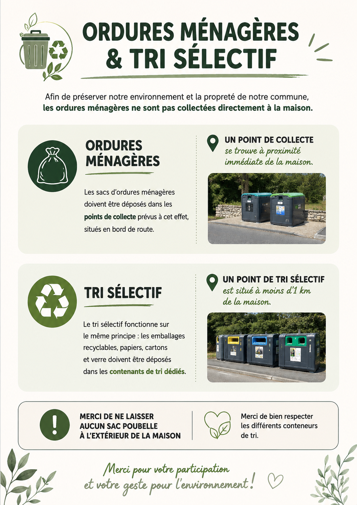

Les ordures ménagères doivent être déposées dans les points de collecte situés au bord de la route. Un point de collecte se trouve à proximité de la maison.
Le tri sélectif se fait également dans des points de collecte dédiés. Les conteneurs pour le verre, le plastique, le papier et les cartons se trouvent à moins d'un kilomètre de la maison.
Cliquez sur le point de collecte souhaité pour l'afficher directement dans Google Maps.
🗑️ Ordures ménagères – à proximité ♻️ Tri sélectif + ordures ménagèresNous vous remercions de respecter les consignes de tri et de ne pas laisser de sacs-poubelle à l'extérieur de la maison ou à proximité des conteneurs lorsqu'ils sont pleins.